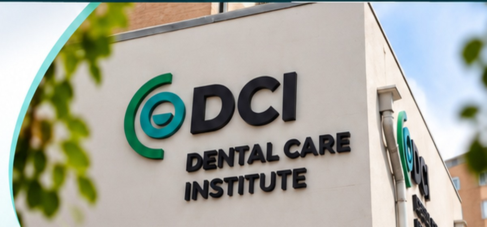

Missão
Promover a Medicina Dentária, valorizar o cirurgião-dentista no contexto técnico-científico e sociocultural e contribuir com a promoção da saúde bucal da população.
Cuidado, conhecimento e experiência em Medicina Dentária.

A DCI – Dental Care Institute nasceu do sonho de oferecer mais qualidade, humanização e respeito quando o assunto é tratamento dentário e capacitação dos cirurgiões dentistas.
É justamente por isso que carregamos a palavra “Cuidado” no nosso nome. Prestar apoio ao maior número de pessoas também é a nossa prioridade, por meio de um protocolo de trabalho que une eficiência, rapidez e uma proposta personalizada para cada paciente.
Todos os procedimentos dentários são realizados por uma equipa qualificada, obedecendo aos mais rigorosos padrões de qualidade, ética e biossegurança, garantindo tranquilidade e segurança antes, durante e após o tratamento.
Oferecemos cursos com conteúdo atual e prático, que proporcionam uma aprendizagem baseada no exercício constante da técnica, da atitude e da responsabilidade como profissionais de saúde.
Promover a Medicina Dentária, valorizar o cirurgião-dentista no contexto técnico-científico e sociocultural e contribuir com a promoção da saúde bucal da população.
Prestar apoio ao maior número de pessoas com uma prática dentária atualizada e pragmática.